Nick Malone
Game Designer
Nick Malone
Game Designer
 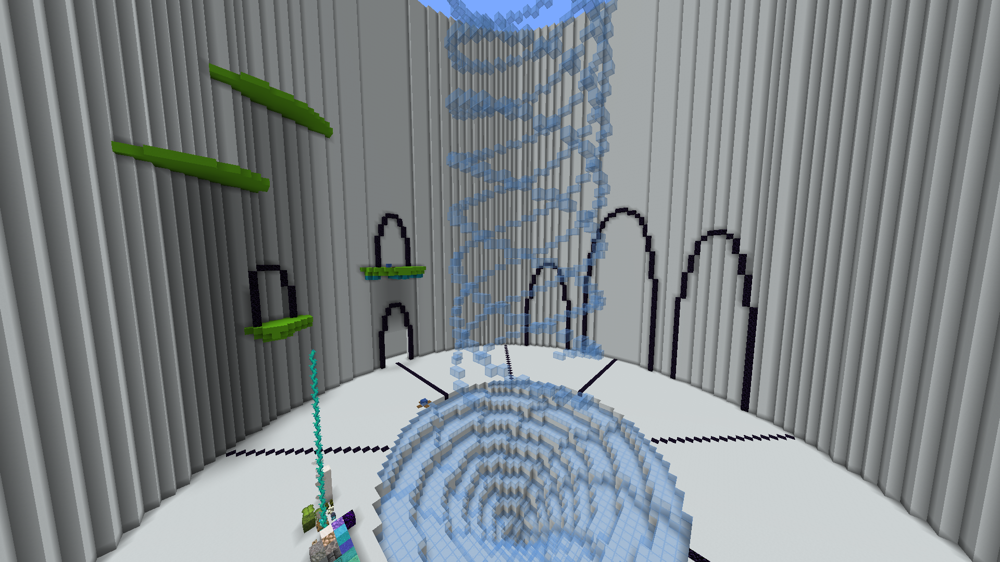
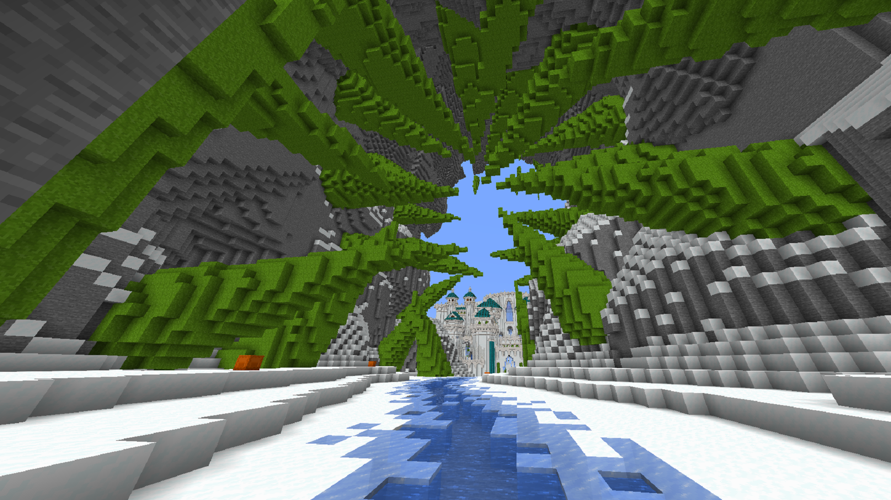
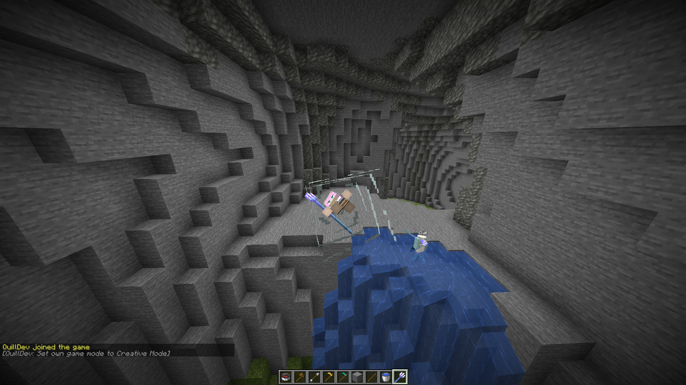
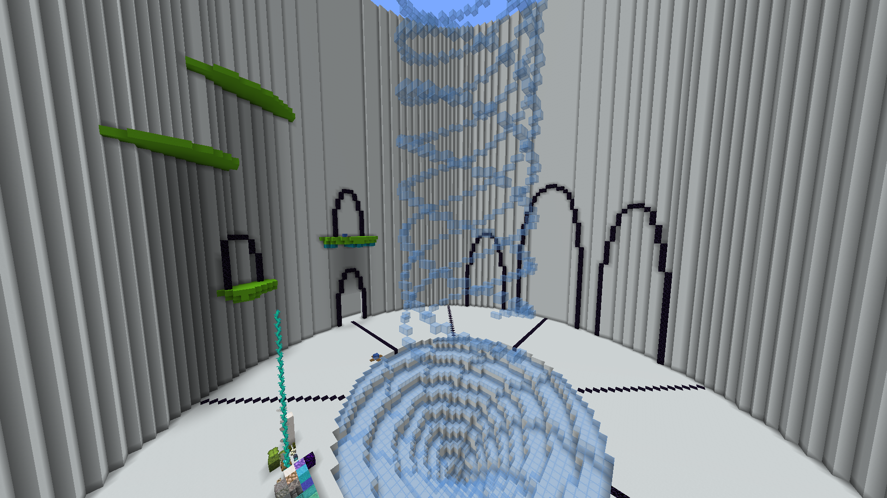
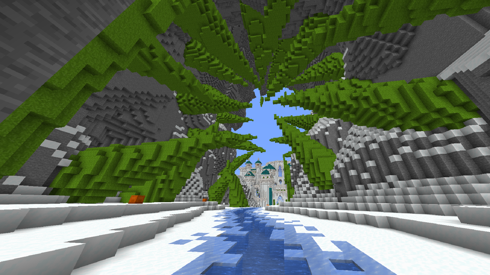
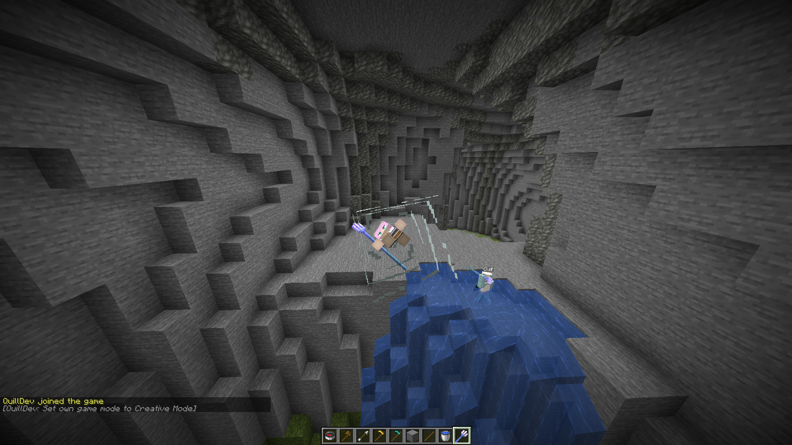
Teams of 4 must defeat mobs for coins and deposit them into the whirlpool at the center to see who comes out with the most in 20 minutes. Players are given riptide tridents to launch themselves to elevated areas and defeat custom mobs. The dungeon is split into 3 areas, each with their own boss which gives a coin multiplier when defeated. Defeating all bosses will activate mayhem mode which continuously spawns mobs in the center whirlpool at the highest coin multiplier. This project was a part of a Twitch Rivals Minecraft minigames event. Temple of the Tides is a continuation of the Temple of the Elements series with this one focused on trident movement and PvE.
There were a bunch of ideas on how the dungeon should be laid out and part of that depended on how much time teams had to complete the dungeon for the event. Usually 45 minutes was given for each minigame, but ours was given 20 minutes so it forced us to scrap some things and start from scratch after hearing that news a week in. At one point, we thought of a fully linear dungeon that teams go through together, but we didn’t want to restrict player movement and instead let them split up. We eventually wanted 4 unique areas for the dungeon and to have each area consist of 15 rooms linked with checkpoints after every 5 to return to the middle and deposit coins.
We ended up deciding on 3 areas instead of 4. We also scrapped the 15 room concept and just made each area unique in its own way. A lot of this came down to late decision making and knowing we had a small time frame to complete this, especially with some builders having other matters to attend to. There’s also a halfway checkpoint for each dungeon and one before the boss area which will give players a fast way back if defeated. The checkpoints connect to the central hub with the whirlpool and have waterfalls come from them to display that they’re unlocked.
The Moss Dungeon matches the original concept the closest with it being a chain of rooms connected by caves. A bunch of boxes were made with a connection before turning it into a giant cave system. Ponds and rivers are scattered throughout to give fast options for players to take with the riptides. There’s even a section with floating water spheres which players must hop through to proceed further. The boss room had lily pad islands with a giant slime splitting up and merging back together.
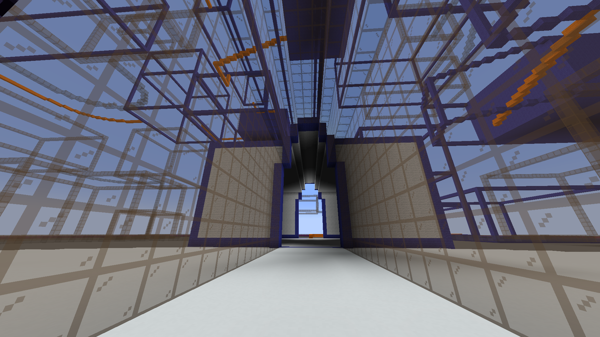The Pirate Dungeon gives more room for the player to explore and presents the final destination immediately with how the pirate ship is framed upon entering the dungeon. A giant cave needed to fit our pirate ship so it was decided to have 3 different elevation areas to split up the cave’s gameplay. The boss is a flying ghast with special fireball shooting to present a challenge to players to achieve the coin multiplier. Most of the level has water for easy navigation and can be used to help defeat the boss when it goes low.
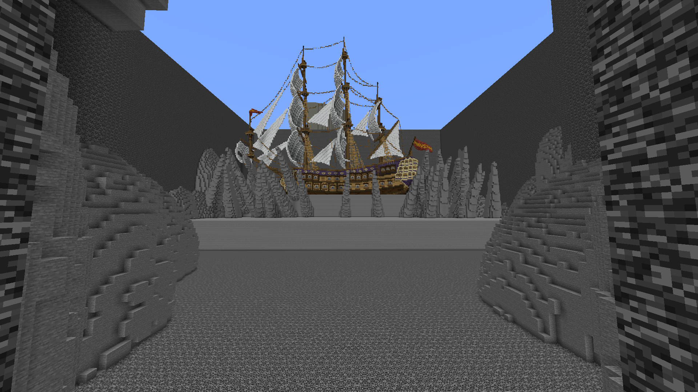The Ice Dungeon is a bit linear with how the castle is designed to follow a set path throughout. While we didn’t want to have a completely linear area, our time constraint on building forced us to do so. There are special movement areas to get through with the ice themed mobs to slow the players down. The boss is a pillager mage with projectile abilities where you fight on the highest point of the castle.
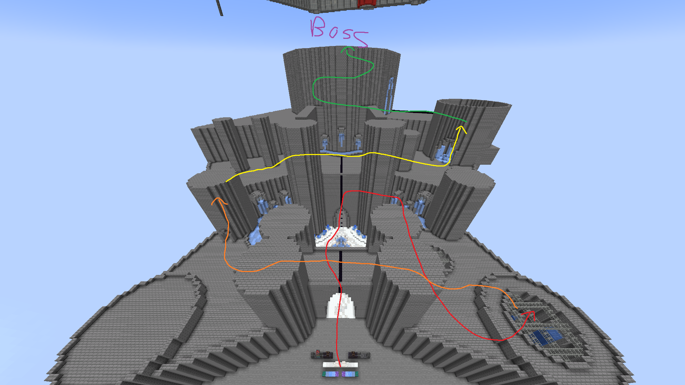A massive crunch was needed in the final days to finish the map as I was the only one available to build in the final week. We were able to acquire help from an aesthetic builder to skin a lot of the gray mapped areas such as the ice castle. Overall, the game played well with some teams defeating all of the bosses and unlocking mayhem mode. It created an intense atmosphere with the coin deposit messages showing each teams’ progress and streamers pulling off risky plays to get as many coins as they could at the last second. The project turned out to be very different than we first envisioned as the 20 minute timer meant we couldn’t make anything on a grand scale but that may have been a good thing with how we were just able to squeak by.

 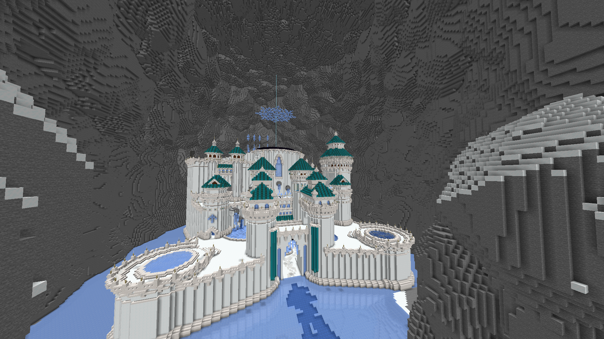
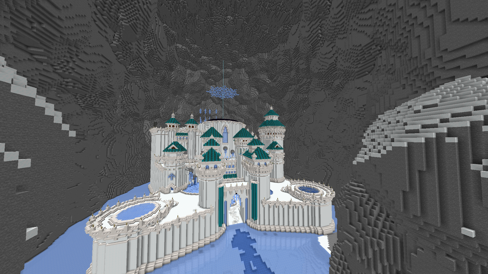
Jump to 3:38:20 in the Twitch VOD.
Player POV